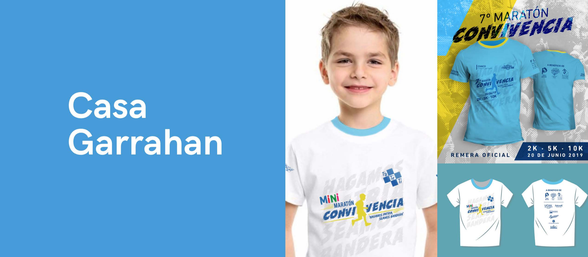

Campañas

Una campaña publicitaria es una estrategia de comunicación que llevan a cabo las empresas para difundir un producto, servicio o material de la marca a su mercado meta, con el objetivo de fijarla en la mente de sus consumidores potenciales.
Marcas

Perfiles de redes sociales con los que cuentas; Información sobre tu audiencia y resultados; Metodología de trabajo y anteriores campaña.